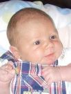

Surnames Individuals Sources Places Gallery

| GRAMPS ID: | I0371 |
| Birth Name: | Jaego Henry Chaloux |
| Gender: | male |
| Birth: | 2008-07-03 |
| Father: | Phillip Chaloux (Birth) |
| Mother: | Taryn Crankshaw (Birth) |
Phillip Chaloux
Jaego Henry Chaloux|
| Arnold Crankshaw
| Thomas Arnold Crankshaw|
| | | Jacob Jacobus van der Merwe
| | | Jacob Johannes van der Merwe|
| | | | | Georg Portwig
| | | | |Barbara Christina Johanna Portwig|
| | | | | Fouche
| | |Anida Ella van der Merwe|
| | | Johannes Roos
| | | Jan Stephanus Roos|
| | | | |Maria Margaretha Wilman
| | |Ella Susanna Maria Roos|
| | | 2 Beetge
| | | Beetge|
|Taryn Crankshaw|
|Gail Anderson